stove wick
Kerosine Stove is an essential commodity for millions of homes across Sub-Saharan Africa and part of Asia, Kerosene stoves are used by many homes as the major source of preparing meals or as a backup. As time goes on one would have to replace the wick.
Stove wicks is important part of kerosine stove mechanism, a good kerosene stove is not determined by its external beauty but the ability of the wick to burn blue when lit with a matchstick. The advantages of using a very good wick include: the back of the pot will not easily turn black, and applying soap for washing will be made easy
Documenting Iyabo at her shop in ile-ife,Nigeria, She is one of many people who weave and pack stove wicks for sale to individuals. All the process are made by hand with a local made weaving loom, she shares her shop with her mother, a gold smith, it is quite common in markets in Yoruba cities for these two profession to share a market stall, The goldsmiths do not occupy any large or imposing space, but they are content with a little space in a corner from which simple setting they restore a special glow to jewellery which have became dull or dirty, any damage to the jewellery can also be repaired by the goldsmiths
 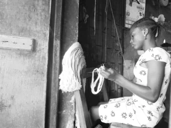
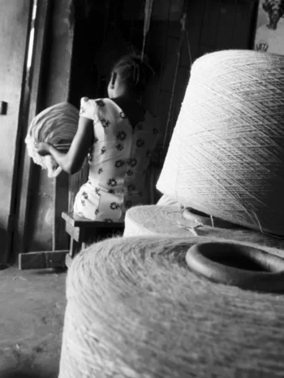
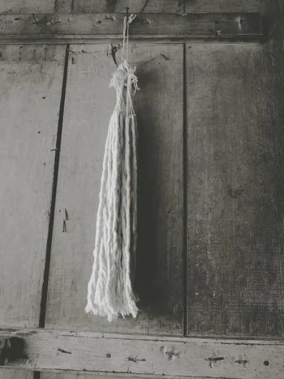
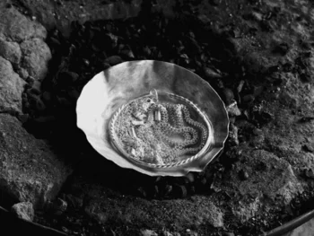
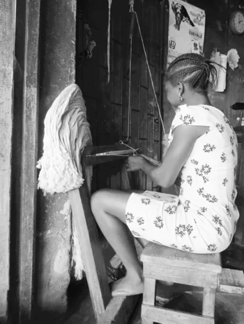
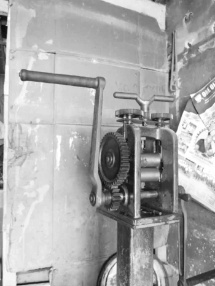
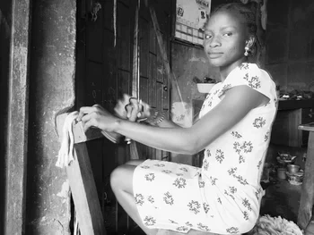
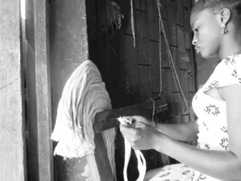
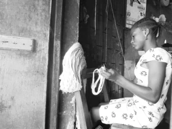
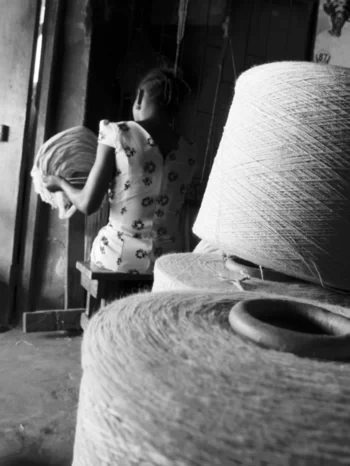
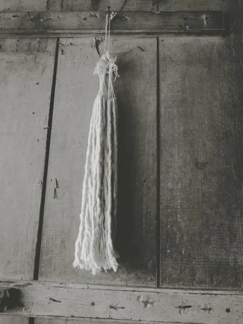
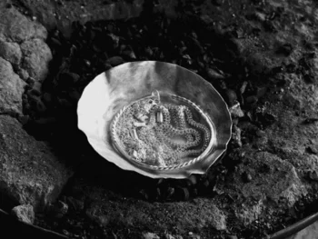
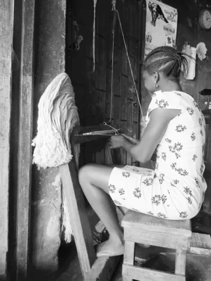
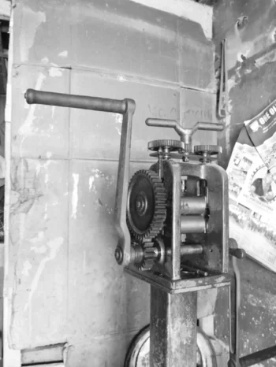
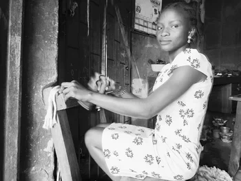
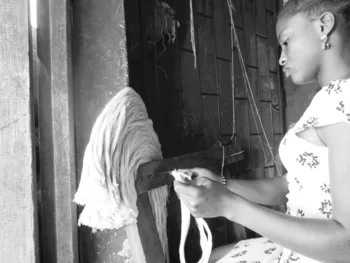